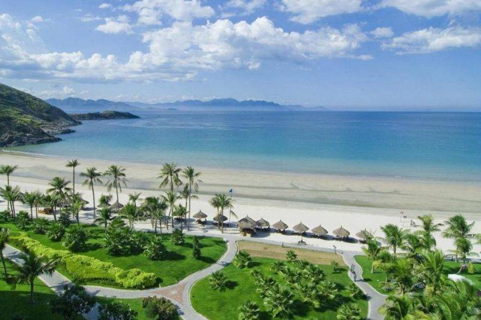

Đà Nẵng, thành phố miền trung nhiều nắng nhiều gió và cũng nhiều những danh lam thắng cảnh độc đáo cho du khách khám phá. Vậy có những địa điểm du lịch khám phá nào mà bạn không nên bỏ lỡ. Cùng xem ngay!
1. Bãi tắm biển Mỹ Khê
Bãi tắm biển Mỹ Khê Đà Nẵng
2. Bãi tắm Phạm Văn Đồng

Bãi biển Phạm Văn Đồng
Tọa lạc ở một vị trí lý tưởng với sông núi bao quanh, thuận tiện cho việc di chuyển. Nơi đây được thiên nhiên ban tặng các cảnh sắc đẹp, đồng thời trở thành một trong những địa điểm vui chơi Đà Nẵng được nhiều du khách yêu thích.
3. Bãi biển Nam Ô hay Rạn Nam Ô

Bãi biển Nam Ô
Tới với bãi Nam Ô, du khách sẽ tận mắt chiêm ngưỡng những rạn san hô hết sức phong phú và đa dạng, được hòa mình vào dòng nước biển mát lạnh và tham gia các hoạt động câu cá, check in đẹp hết sảy, được thưởng thức các loại mắm và món gỏi cá Nam Ô nổi tiếng như cá thu, cá nhám, cá nhồng…Người ta hay gọi Nam Ô là “Thiên đường du lịch” bởi vẻ đẹp hoang sơ và nét độc đáo khó quên.
4. Giếng Trời

Giếng trời Đà Nẵng
Những bạn thích phiêu lưu và mạo hiểm đừng bỏ qua Giếng Trời nhé! Vì đây là địa điểm nằm trong cánh rừng nguyên sinh thuộc huyện Hòa Vang. Tới đây, bạn sẽ nghe thấy tiếng suối chảy róc rách, tiếng chim hót líu lo, làm đang đi mọi lo toan, mệt mỏi của bạn.
5. Bán đảo Sơn Trà

Bán đảo Sơn Trà tại Đà Nẵng đẹp hoang sơ và hùng vĩ
Bạn không nên bỏ lỡ địa điểm du lịch Đà Nẵng miễn phí này nhé! Bán đảo Sơn Trà nằm cách trung tâm thành phố Đà Nẵng chỉ khoảng 10km, sở hữu khu rừng nguyên sinh xanh mát với kiểu khí hậu trong lành được thiên nhiên ban tặng. Ngoài ra, bán đảo Sơn Trà còn thu hút rất nhiều khách du lịch nhờ có những cảnh quan như ngôi chùa Linh Ứng với bức tượng Phật lớn nhất khu vực Đông Nam á, bãi Rạng, mũi Nghê, hồ Xanh,… Nhờ đặc điểm khí hậu mát mẻ quanh năm, khiến nơi đây là địa điểm vui chơi thích hợp với các hoạt động nghỉ dưỡng và tham quan cho du khách. Bãi Rạng và bãi Bụt nằm trong bán đảo Sơn Trà là những bãi biển đẹp nhất Đà Nẵng, mang lại cho du khách những phút giây thư giãn, hòa mình vào làn nước mát lạnh. Ở đây, còn có dịch vụ cho thuê chòi, ghế nằm trên bãi biển và dịch vụ lặn ngắm san hô rất thú vị.
6. Ngũ Hành Sơn

Núi Ngũ Hành Sơn, địa điểm vui chơi check in nổi tiếng ở Đà Nẵng
Được xem là “Nam Thiên Thanh Thắng” với 5 ngọn núi Kim, Mộc, Thủy, Hỏa, Thổ, nơi đây thuộc danh sách những địa điểm vui chơi Đà Nẵng mang nét tâm linh. Đến với nơi đây, du khách không chỉ chinh phục được các ngọn núi của thắng cảnh Ngũ Hành Sơn, mà còn được tham quan các địa điểm hấp dẫn khác như địa đạo núi đá chồng, động Huyền Không, vọng Giang Đài, động Âm Phủ,…
7. Làng đá mỹ nghệ Non Nước

Làng đá Mỹ Nghệ non nước Đà Nẵng
Nằm trong top các địa điểm vui chơi Đà Nẵng được khách du lịch ký tham dự đông nhất, ngôi làng với lịch sử hình thành và phát triển hơn 400 năm, được công nhận là di sản văn hóa phi vật thể cấp quốc gia. Đến nơi đây du khách không chỉ tham quan mà còn có thể mua những sản phẩm bằng đá về làm quà, đặc biệt làng đá mỹ nghệ Non Nước nằm rất gần Danh Thắng Ngũ Hành Sơn đấy nhé!
Đà Nẵng nổi tiếng với những địa điểm check in vang danh thế giới. Hãy khám phá xem đó là những địa điểm nào nhé!
8. Cầu Vàng, Địa điểm du lịch Đà Nẵng cực HOT

Cầu Vàng Đà Nẵng
Cầu vàng là địa điểm vui chơi Đà Nẵng được rất nhiều du khách quan tâm trong thời gian gần đây, sở hữu kiến trúc độc lạ với đôi bàn tay khổng lồ nâng đỡ toàn bộ cây cầu trải dài như một dải lụa. Ở trên cầu, bạn sẽ được ngắm nhìn thành phố Đà Nẵng từ xa và cảm giác như là mình lạc trong chốn bồng lai tiên cảnh, thật tuyệt phải không nào?
9. Bãi đá Obama

Bãi đá Obama
Là một bãi đá hoang sơ thuộc bán đảo Sơn Trà, Obama đã và đang là địa điểm gây sốt của các tín đồ du lịch. Nơi đây mang lại cảm giác bình yên và trong veo với bầu không khí dịu dàng, mang lại sự thoải mái cho bạn. Đây còn là địa điểm được nhiều cặp đôi chọn để làm nên bộ ảnh cưới đầy ý nghĩa của mình. Ngoài ra, du khách có thể thoải mái nghỉ ngơi bằng cách thuê chòi và cùng nhau ăn uống, tắm biển thả ga tại đây.
11. Tượng Cá chép hoá rồng

Cá chép hóa rồng là một cái tên khi mới nghe đến sẽ gây cho bạn sự tò mò và chú ý đúng không nào? Đây là một biểu tượng mới của thành phố Đà Nẵng, bạn có thể tận mắt chiêm ngưỡng bức tượng phun nước từ phía đầu rồng, vừa được ngắm cá chép hóa rồng bổ mắt qua sẽ nhìn thấy cây cầu tình yêu, xa xa sẽ là cầu Rồng, ta nói tiện gì đâu ấy!
12. Đỉnh Bàn Cờ

Là một địa điểm có sức hút mãnh liệt đối với dân phượt và được đánh giá là một dốc đứng khá hiểm trở với núi non trùng trùng. Khi lên đến đỉnh Bàn Cờ, bạn sẽ nhìn thấy bao quát toàn thành phố và thả mình với mây trời.
13. Khu du lịch Bà Nà Hills – Địa điểm vui chơi Đà Nẵng Đẹp Nhất

Chắc hẳn mọi người đã không còn xa lạ với địa điểm vui chơi Đà Nẵng – Bà Nà Hills. Bà Nà Hill là một trong địa điểm check in nổi tiếng Đà Nẵng. Đây là quần thể du lịch nghỉ dưỡng vui chơi giải trí đẳng cấp nhất Việt Nam hiện nay. Được xem là địa điểm vui chơi giải trí hút khách nhất Thành phố Đà Nẵng. Nếu bạn muốn cảm nhận rõ 4 mùa thì Bà Nà Hills sẽ là sự lựa chọn đúng đắn vì chỉ trong một ngày bạn sẽ cảm nhận được 4 kiểu thời tiết gồm Xuân, Hạ, Thu, Đông. Hãy đến ngay Bà Nà Hills để có thể tận mắt chứng kiến cảnh núi non hùng vĩ của cả thành phố Đà Nẵng từ xa, tham quan những công trình độc đáo có 1 không 2 và tham gia vào những hoạt động hấp dẫn như trải nghiệm các trò chơi cảm giác mạnh, đi cáp treo,…
Với Đà Nẵng là một thành phố năng động cả ngày lẫn đêm, hiển nhiên các địa điểm vui chơi về đêm sẽ rất đa dạng. Gotadi tổng hợp những địa điểm vui chơi về đêm nổi tiếng và thu hút nhiều người dân địa phương cũng như khách du lịch ghé thăm nhất khi du lịch Đà Nẵng!
14. Cầu quay sông Hàn – địa điểm vui chơi ở Đà Nẵng về đêm cực lung linh

Hàn – cây cầu quay đầu tiên tại Việt Nam. Đây cũng là biểu tượng của thành phố Đà Nẵng và là niềm tự hào của người dân địa nơi đây. Đến nơi đây bạn sẽ thoả sức check in với cầu Sông Hàn, chiêm ngưỡng cảnh sắc lung linh của những ánh đèn đủ sắc màu phản chiếu xuống mặt nước và có cơ hội chiêm ngưỡng cây cầu quay góc 90 độ lúc 1 giờ đêm, chắc hẳn khi thực sự chứng kiến bạn sẽ có một trải nghiệm khó quên.
15. Cầu rồng – địa điểm vui chơi Đà Nẵng về đêm với họat động phun lửa, phun nước

Cầu Rồng là địa điểm check in Đà Nẵng nổi tiếng nhất
Thành phố Đà Nẵng được mệnh danh là thành phố của những cây cầu, nên nơi đây sở hữu những cây cầu mang nét đẹp độc đáo. Ngoài cầu Sông Hàn với khả năng quay 90 độ thì cầu Rồng, cũng là một cây cầu cực kỳ nổi tiếng mà du khách khách không thể bỏ qua khi tới vui chơi tại Đà Nẵng. Cây cầu được thiết kế với biểu tượng là con rồng màu vàng vương mình hướng ra biển Đông, thể hiện khát vọng và thịnh vượng của thành phố. Ngoài ra, nó khiến mọi người phải kinh ngạc, bởi có thể phun lửa và nước. Vào 21h tối thứ 7 và chủ nhật bạn sẽ chiêm ngưỡng được khoảnh khắc tuyệt đẹp và đặc biệt này. Ngoài ra, xung quanh sông Hàn còn có rất nhiều quán cafe check in đẹp ở Đà Nẵng du khách có thể đến và tận hưởng view đẹp nhìn ra sông Hàn.